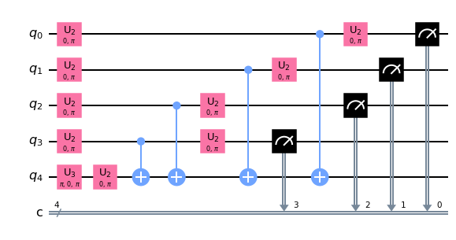
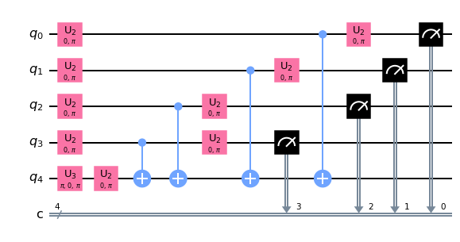

Topic 2. Executing IBM Quantum Systems#
Instructor : Hwajung Kang, Ph.D., Education Delivery Program Manager, IBM Quantum
import numpy as np
import matplotlib.pyplot as plt
import pandas as pd
from qiskit import *
from qiskit.visualization import plot_distribution, plot_error_map
from qiskit.quantum_info import hellinger_fidelity
sim = Aer.get_backend('aer_simulator')
def myfunc(my_str):
num_str = len(my_str)
ind = num_str - 1 - np.where(np.array(list(my_str)) == '1')[0]
qc = QuantumCircuit(num_str+1, name ='U')
qc.cx(ind, num_str)
U = qc.to_gate()
return U
def BV(U):
num_str = U.num_qubits - 1
qc = QuantumCircuit(num_str + 1, num_str)
qc.x(num_str)
qc.h(range(num_str + 1))
qc.append(U, range(num_str+1))
qc.h(range(num_str))
qc.measure(range(num_str), range(num_str))
return qc
U = myfunc('1111')
qc = BV(U)
display(qc.draw('mpl'))
display(qc.decompose().draw('mpl'))
 

qc_trans = transpile(qc, sim)
counts = sim.run(qc_trans).result().get_counts()
counts
{'1111': 1024}
Quantum circuit execution on IBM Quantum system#
STEPS
Choose an IBM Quantum system
Transpile the circuit to be executable
Run the transpiled circuit on the chosen system
Step1 Choose a hardware and access its information#
IBMQ.load_account()
prov = IBMQ.get_provider(group='deployed')
prov.backends()
[<IBMQSimulator('ibmq_qasm_simulator') from IBMQ(hub='ibm-q-internal', group='deployed', project='default')>,
<IBMQBackend('ibmq_montreal') from IBMQ(hub='ibm-q-internal', group='deployed', project='default')>,
<IBMQBackend('ibmq_toronto') from IBMQ(hub='ibm-q-internal', group='deployed', project='default')>,
<IBMQBackend('ibmq_kolkata') from IBMQ(hub='ibm-q-internal', group='deployed', project='default')>,
<IBMQBackend('ibmq_mumbai') from IBMQ(hub='ibm-q-internal', group='deployed', project='default')>,
<IBMQBackend('ibmq_lima') from IBMQ(hub='ibm-q-internal', group='deployed', project='default')>,
<IBMQBackend('ibmq_belem') from IBMQ(hub='ibm-q-internal', group='deployed', project='default')>,
<IBMQBackend('ibmq_quito') from IBMQ(hub='ibm-q-internal', group='deployed', project='default')>,
<IBMQBackend('ibmq_guadalupe') from IBMQ(hub='ibm-q-internal', group='deployed', project='default')>,
<IBMQBackend('ibmq_jakarta') from IBMQ(hub='ibm-q-internal', group='deployed', project='default')>,
<IBMQBackend('ibmq_manila') from IBMQ(hub='ibm-q-internal', group='deployed', project='default')>,
<IBMQBackend('ibm_hanoi') from IBMQ(hub='ibm-q-internal', group='deployed', project='default')>,
<IBMQBackend('ibm_lagos') from IBMQ(hub='ibm-q-internal', group='deployed', project='default')>,
<IBMQBackend('ibm_nairobi') from IBMQ(hub='ibm-q-internal', group='deployed', project='default')>,
<IBMQBackend('ibm_cairo') from IBMQ(hub='ibm-q-internal', group='deployed', project='default')>,
<IBMQBackend('ibm_auckland') from IBMQ(hub='ibm-q-internal', group='deployed', project='default')>,
<IBMQBackend('ibm_perth') from IBMQ(hub='ibm-q-internal', group='deployed', project='default')>,
<IBMQBackend('ibm_washington') from IBMQ(hub='ibm-q-internal', group='deployed', project='default')>,
<IBMQBackend('ibm_oslo') from IBMQ(hub='ibm-q-internal', group='deployed', project='default')>,
<IBMQBackend('ibm_geneva') from IBMQ(hub='ibm-q-internal', group='deployed', project='default')>,
<IBMQBackend('ibm_sherbrooke') from IBMQ(hub='ibm-q-internal', group='deployed', project='default')>]
backend = prov.backend.ibm_auckland
plot_error_map(backend)
#backend.configuration().to_dict()
conf = backend.configuration()
print('backend:{}'.format(backend.name()))
print('num_qubit:{}, QV:{}, CLOP:{}\n'.format(conf.num_qubits, conf.quantum_volume, conf.clops))
print('max_num_circuits:{},'.format(conf.max_experiments),
'max_shots:{}\n'.format(conf.max_shots))
print('basis gates:{}'.format(conf.basis_gates),'\n')
print('coupling map:{}'.format(conf.coupling_map))
backend:ibm_auckland
num_qubit:27, QV:64, CLOP:2419
max_num_circuits:300, max_shots:100000
basis gates:['id', 'rz', 'sx', 'x', 'cx', 'reset']
coupling map:[[0, 1], [1, 0], [1, 2], [1, 4], [2, 1], [2, 3], [3, 2], [3, 5], [4, 1], [4, 7], [5, 3], [5, 8], [6, 7], [7, 4], [7, 6], [7, 10], [8, 5], [8, 9], [8, 11], [9, 8], [10, 7], [10, 12], [11, 8], [11, 14], [12, 10], [12, 13], [12, 15], [13, 12], [13, 14], [14, 11], [14, 13], [14, 16], [15, 12], [15, 18], [16, 14], [16, 19], [17, 18], [18, 15], [18, 17], [18, 21], [19, 16], [19, 20], [19, 22], [20, 19], [21, 18], [21, 23], [22, 19], [22, 25], [23, 21], [23, 24], [24, 23], [24, 25], [25, 22], [25, 24], [25, 26], [26, 25]]
Step 2 Transpile a circuit (circuits) to run#
qc_trans = transpile(BV(U), backend)
qc_trans.draw('mpl')
Step 3. Execute a circuit (circuits) on a chosen system.#
#job = backend.run(qc_trans, shots=100000) #default num_shots = 4000
#print(job.job_id())
job = backend.retrieve_job('634d66681623e57c0763f7bd')
#qc_run = job.circuits()
#qc_run[0].draw('mpl')
counts = job.result().get_counts()
plot_distribution(counts)
plot_distribution(counts, target_string='1'*4, sort='hamming')
Impact of Noise#
qc_all = []
for k in range(4, 10):
U = myfunc('1'*k)
qc_all.append(BV(U))
qc_all_trans = transpile(qc_all, backend)
qc_all[2].draw('mpl')
# job = backend.run(qc_all_trans, shots=100000)
# print(job.job_id())
job = backend.retrieve_job('634d72fd92d404c113d9344e')
counts_all = job.result().get_counts()
fig, axs = plt.subplots(4, 1, figsize=(30, 27))
for k in range(4):
plot_distribution(counts_all[k], ax=axs[k], target_string='1'*(k+4), sort='hamming')
plot_distribution(counts_all[-2], figsize=(35, 10), target_string='1'*8, sort='hamming')
plot_distribution(counts_all[-1], figsize=(60, 10), target_string='1'*9, sort='hamming')
# hellinger_fidelity
counts_ideal = [{'1'*k:1} for k in range(4, 10)]
x = list(range(4, 4+len(counts_all)))
y = [hellinger_fidelity(counts_ideal[k], counts_all[k]) for k in range(len(counts_all))]
fig, ax = plt.subplots()
ax.bar(x, y)
ax.set_ylabel('fidelity');
Noise Characteristics#
backend = prov.backend.ibmq_kolkata
#backend.properties().to_dict()
conf = backend.configuration()
prop = backend.properties()
T1_all, err_cx_all, err_readout_all, err_sing_all = [], [], [], []
for k in range(conf.num_qubits):
T1_all.append(prop.t1(k)*1e6)# to convert in micro sec
err_readout_all.append(prop.readout_error(k))
sing_gates = ['id', 'rz', 'sx', 'x'] #only sx is calibrated
err_sing_avg = []
for gate in sing_gates:
err_gate = []
for k in range(conf.num_qubits):
err_gate.append(prop.gate_error(gate, k))
err_sing_all.append(err_gate)
err_sing_avg.append(np.round(np.median(err_gate), 5))
for edge in conf.coupling_map:
err_cx_all.append(prop.gate_error('cx', edge))
##################
print('backend:{}, num_qubit:{}\n'.format(backend.name(), conf.num_qubits))
#T1 (relaxation)
print('T1') #unit micro sec
print(*['q{} : {},\n'.format(k, np.round(T1_all[k], 2)) for k in range(conf.num_qubits)])
# readout err
print('readout')
print(*['q{} : {}\n'.format(k, np.round(err_readout_all[k], 4)) for k in range(conf.num_qubits)])
# cx gate err
print('cnot err')
print(*['{} : {}\n'.format(conf.coupling_map[k], np.round(err_cx_all[k], 4))
for k in range(len(conf.coupling_map))])
# # single qubit gate err
# #id
# print('id')
# print(*['q{} : {},\n'.format(k, np.round(err_sing_all[0][k], 4)) for k in range(conf.num_qubits)])
# #rz
# print('rz')
# print(*['q{} : {},\n'.format(k, np.round(err_sing_all[1][k], 4)) for k in range(conf.num_qubits)])
# #sx
# print('sx')
# print(*['q{} : {},\n'.format(k, np.round(err_sing_all[2][k], 4)) for k in range(conf.num_qubits)])
# #x
# print('x')
# print(*['q{} : {},\n'.format(k, np.round(err_sing_all[3][k], 4)) for k in range(conf.num_qubits)])
# mean err rate for each operation
print('median error for single qubit gates') # 0.01 - 0.1 %
print(dict(zip(sing_gates, err_sing_avg)),'\n')
print('median cx error') # expect 1% or less
print('cx : {}\n'.format(np.round(np.median(err_cx_all), 4)))
print('median readout error')# 1 - 3 %
print('readout : {}'.format(np.round(np.median(err_readout_all), 4)))
backend:ibmq_kolkata, num_qubit:27
T1
q0 : 104.73,
q1 : 213.75,
q2 : 116.62,
q3 : 121.18,
q4 : 125.68,
q5 : 139.63,
q6 : 92.81,
q7 : 194.28,
q8 : 105.07,
q9 : 131.23,
q10 : 122.82,
q11 : 13.32,
q12 : 135.78,
q13 : 163.02,
q14 : 148.04,
q15 : 125.46,
q16 : 104.46,
q17 : 88.23,
q18 : 137.88,
q19 : 185.4,
q20 : 139.78,
q21 : 121.01,
q22 : 55.88,
q23 : 148.83,
q24 : 55.17,
q25 : 193.91,
q26 : 150.77,
readout
q0 : 0.0131
q1 : 0.0133
q2 : 0.0126
q3 : 0.0267
q4 : 0.0264
q5 : 0.0261
q6 : 0.0376
q7 : 0.0238
q8 : 0.0148
q9 : 0.156
q10 : 0.0218
q11 : 0.047
q12 : 0.0089
q13 : 0.0111
q14 : 0.0056
q15 : 0.0071
q16 : 0.0123
q17 : 0.0077
q18 : 0.0079
q19 : 0.0121
q20 : 0.0164
q21 : 0.0059
q22 : 0.0086
q23 : 0.0049
q24 : 0.0231
q25 : 0.0082
q26 : 0.0124
cnot err
[0, 1] : 0.0069
[1, 0] : 0.0069
[1, 2] : 0.0066
[1, 4] : 0.0075
[2, 1] : 0.0066
[2, 3] : 0.0105
[3, 2] : 0.0105
[3, 5] : 0.01
[4, 1] : 0.0075
[4, 7] : 0.0086
[5, 3] : 0.01
[5, 8] : 0.0154
[6, 7] : 0.0076
[7, 4] : 0.0086
[7, 6] : 0.0076
[7, 10] : 0.0115
[8, 5] : 0.0154
[8, 9] : 0.0095
[8, 11] : 0.0251
[9, 8] : 0.0095
[10, 7] : 0.0115
[10, 12] : 0.0137
[11, 8] : 0.0251
[11, 14] : 0.0622
[12, 10] : 0.0137
[12, 13] : 0.0067
[12, 15] : 0.0049
[13, 12] : 0.0067
[13, 14] : 0.0045
[14, 11] : 0.0622
[14, 13] : 0.0045
[14, 16] : 0.0049
[15, 12] : 0.0049
[15, 18] : 0.0138
[16, 14] : 0.0049
[16, 19] : 0.0039
[17, 18] : 0.0115
[18, 15] : 0.0138
[18, 17] : 0.0115
[18, 21] : 0.0122
[19, 16] : 0.0039
[19, 20] : 0.0058
[19, 22] : 0.0042
[20, 19] : 0.0058
[21, 18] : 0.0122
[21, 23] : 0.0069
[22, 19] : 0.0042
[22, 25] : 0.0053
[23, 21] : 0.0069
[23, 24] : 0.0599
[24, 23] : 0.0599
[24, 25] : 1
[25, 22] : 0.0053
[25, 24] : 1
[25, 26] : 0.0047
[26, 25] : 0.0047
median error for single qubit gates
{'id': 0.00023, 'rz': 0.0, 'sx': 0.00023, 'x': 0.00023}
median cx error
cx : 0.0081
median readout error
readout : 0.0126
Qiskit Transpiler#
Transpiler steps
Express circuit in the native gate sets of a backend: [‘id’, ‘rz’, ‘sx’, ‘x’, ‘cx’, ‘reset’] (identical across the most of the hardwares)
Initial layout (using different algorithms and objectives depending on the optimization level)
SWAP routing - make the circuit compatible with the coupling map
Optimize 1 qubit and 2 qubit gates (using differnt level of algorithms depending on the optimization level)
Remapping the circuit to a low noise subgraph (Mapomatic - arxiv)
qc = QuantumCircuit(5, 4)
qc.x(4)
qc.h(range(5))
qc.cx(range(4), 4)
qc.h(range(4))
qc.barrier()
qc.measure(range(4), range(4))
qc.draw('mpl')
backend = prov.backend.ibmq_kolkata
plot_error_map(backend)
Understand transpiled circuit#
Randomness#
# try multiple times
qc_trans = transpile(qc, backend)
qc_trans.draw('mpl')
Comparison of the number of qubits and CNOT gates in the circuits qc and qc_trans.#
print('* Number of qubits')
print('qc:{} qc_trans:{}\n'.format(qc.num_qubits, qc_trans.num_qubits))
print('* Number of nonlocal gates')
print('qc:{} qc_trans:{}'.format(qc.num_nonlocal_gates(), qc_trans.num_nonlocal_gates()))
* Number of qubits
qc:5 qc_trans:27
* Number of nonlocal gates
qc:4 qc_trans:10
Initial and final mapping between virtual and physical qubits.#
List of physical qubits mapped to the virtual qubits [0, 1, 2, 3, 4]
Initial_layout =
Final_mapping =
Hands-on exercise 1.
- Transpile the following circuit `qc_ex` for `ibm_perth`.
- Compare the circuit properties (.e.g. number of qubits, CNOT gates, circuit depth) for `qc_ex` and the transpiled `qc_ex`.
- Find the initial and final mapping between virtual and physical qubits.
from qiskit.circuit.library import QFT
qc_ex = QFT(4).decompose()
qc_ex.measure_all()
qc_ex.draw('mpl')
## your code goes here
backend_ex = prov.get_backend('ibm_perth')
qc_ex_trans = transpile(qc_ex, backend_ex)
qc_ex_trans.draw('mpl')
List of physical qubits mapped to the virtual qubits [0, 1, 2, 3]
Initial_layout =
Final_mapping =
Optimization levels#
# change optimization level
qc_trans = transpile(qc, backend, optimization_level=3)
qc_trans.draw('mpl')
U = myfunc('1'*5)
qc = BV(U)
trans_circs = []
for k in range(4):
qc_trans = transpile(qc, backend, optimization_level=k)
trans_circs.append(qc_trans)
print('Optimization Level:{}'.format(k))
print('Depth:', qc_trans.depth())
print('Gate counts:', qc_trans.count_ops())
print()
Optimization Level:0
Depth: 29
Gate counts: OrderedDict([('cx', 23), ('rz', 22), ('sx', 11), ('measure', 5), ('x', 1), ('barrier', 1)])
Optimization Level:1
Depth: 26
Gate counts: OrderedDict([('rz', 22), ('cx', 14), ('sx', 11), ('measure', 5), ('barrier', 1)])
Optimization Level:2
Depth: 28
Gate counts: OrderedDict([('cx', 20), ('rz', 18), ('sx', 11), ('measure', 5), ('barrier', 1)])
Optimization Level:3
Depth: 18
Gate counts: OrderedDict([('rz', 18), ('cx', 12), ('sx', 11), ('measure', 5), ('barrier', 1)])
Initial layout#
U = myfunc('1111')
myqc = BV(U)
myqc.draw('mpl')
backend = prov.backend.ibmq_guadalupe
plot_error_map(backend)
Initial layout determined by Qiskit transpiler#
qc_trans = transpile(myqc, backend, optimization_level=0)
qc_trans.draw('mpl')
Initial layout provided mannually#
qc_trans_new = transpile(myqc, backend, optimization_level=0,
initial_layout=list(range(11, 16)))
qc_trans_new.draw('mpl')
Hands-on exercise 2.
Consider the 5 qubit GHZ state, $\frac{1}{\sqrt{2}}(|00000\rangle + |11111\rangle)$.
Build a quantum circuit producing the 5Q GHZ state that is optimize for the topology of the backend, ibmq_kolkata, .e.g. minimize the transpiled circuit depth.
## your code goes here
nq = 5
backend = prov.backend.ibmq_kolkata
# worst
qc_worst = QuantumCircuit(nq)
qc_worst.h(0)
qc_worst.cx([0], range(1,nq))
# ok
qc_ok = QuantumCircuit(nq)
qc_ok.h(0)
qc_ok.cx(range(nq-1), range(1, nq))
# best
qc_best = QuantumCircuit(nq)
qc_best.h(2)
qc_best.cx(2, [1, 3])
qc_best.cx(1, 0)
qc_best.cx(3, 4)
# qc_best = QuantumCircuit(nq)
# qc_best.h(2)
# qc_best.cx(2, [1, 3, 4])
# qc_best.cx(1, 0)
print(qc_worst)
print(qc_ok)
print(qc_best)
┌───┐
q_0: ┤ H ├──■────■────■────■──
└───┘┌─┴─┐ │ │ │
q_1: ─────┤ X ├──┼────┼────┼──
└───┘┌─┴─┐ │ │
q_2: ──────────┤ X ├──┼────┼──
└───┘┌─┴─┐ │
q_3: ───────────────┤ X ├──┼──
└───┘┌─┴─┐
q_4: ────────────────────┤ X ├
└───┘
┌───┐
q_0: ┤ H ├──■─────────────────
└───┘┌─┴─┐
q_1: ─────┤ X ├──■────────────
└───┘┌─┴─┐
q_2: ──────────┤ X ├──■───────
└───┘┌─┴─┐
q_3: ───────────────┤ X ├──■──
└───┘┌─┴─┐
q_4: ────────────────────┤ X ├
└───┘
┌───┐
q_0: ──────────┤ X ├─────
┌───┐└─┬─┘
q_1: ─────┤ X ├──■───────
┌───┐└─┬─┘
q_2: ┤ H ├──■────■───────
└───┘ ┌─┴─┐
q_3: ──────────┤ X ├──■──
└───┘┌─┴─┐
q_4: ───────────────┤ X ├
└───┘
qc_worst_trans = transpile(qc_worst, backend, optimization_level=3)
qc_ok_trans = transpile(qc_ok, backend, optimization_level=3)
qc_best_trans = transpile(qc_best, backend, optimization_level=3)
print(qc_worst_trans.depth())
print(qc_ok_trans.depth())
print(qc_best_trans.depth())
12
7
6
Further reading
import qiskit.tools.jupyter
%qiskit_version_table
Version Information
| Qiskit Software | Version |
|---|---|
qiskit-terra | 0.22.3 |
qiskit-aer | 0.11.1 |
qiskit-ignis | 0.6.0 |
qiskit-ibmq-provider | 0.19.2 |
qiskit | 0.39.3 |
qiskit-nature | 0.5.0 |
qiskit-optimization | 0.4.0 |
| System information | |
| Python version | 3.7.9 |
| Python compiler | Clang 10.0.0 |
| Python build | default, Aug 31 2020 07:22:35 |
| OS | Darwin |
| CPUs | 8 |
| Memory (Gb) | 32.0 |
| Mon Dec 12 15:51:09 2022 EST | |